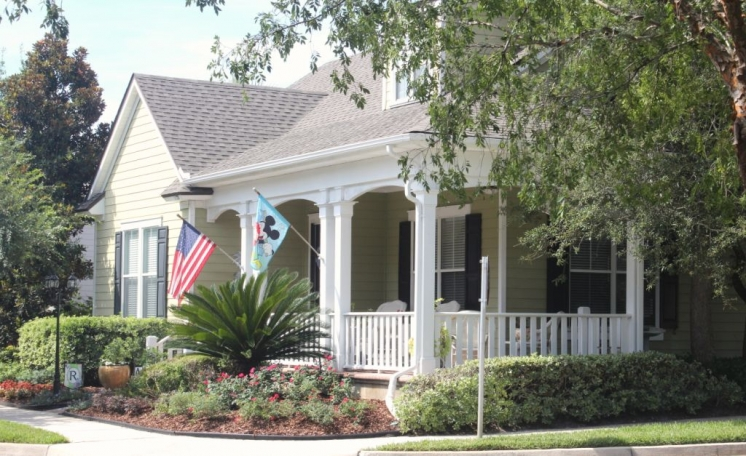
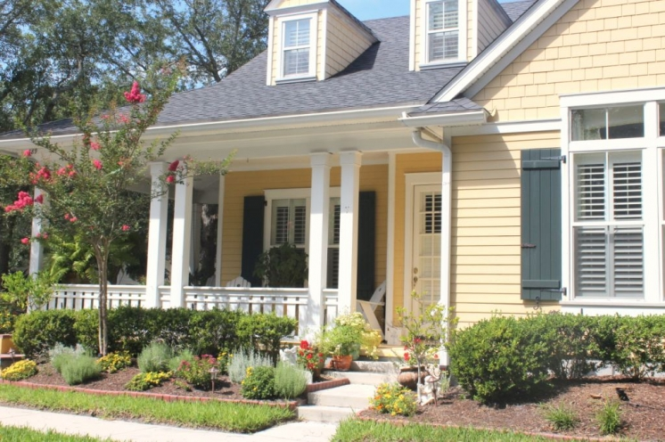
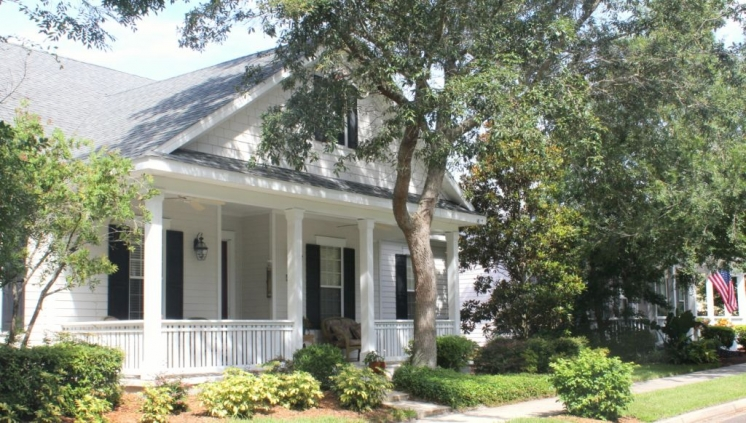

.png)
.PNG)
.PNG)
.PNG)
.PNG)
.PNG)
.JPG)
.JPG)
.PNG)
.PNG)



One last post from our short Amelia Island, Florida trip. My mother had been there a week or so earlier with a friend of hers, and in their wandering around the island they discovered this cute little enclave of homes. She gave us directions on how to find the neighborhood and insisted that we see it before we left. She was very impressed with all the flower beds that went right up to the sidewalks.

I was too, but I was also impressed with the cottage details in the architecture. The name of the neighborhood is Amelia Park. It is not on the beach, but it would only be a short 5 minute drive to get to the beach from there.

It is designed with sidewalks and small set-back requirements to encourage pedestrian traffic and that “neighborhood feel” you get from homes where people sit on the front porch and visit. Obviously not all of the homes are small cottages, but they all had beautiful landscaping.
As my husband drove around, I hopped out and took photographs. I believe my mom said this pink one was her favorite.

 Just look at all the red geraniums on this one! Gorgeous.
Just look at all the red geraniums on this one! Gorgeous.
When I was taking photos of this one, the owner came out, and I told her how wonderful I thought her neighborhood was. I think they are used to having “tourists” with cameras there. This blue one was my favorite…a very Charleston style home. You can see photos of the interior here.
This blue one was my favorite…a very Charleston style home. You can see photos of the interior here.
And then it was time to head home. So long Amelia Island and Elizabeth Pointe Lodge. I hope we will be back soon.
I hope we will be back soon.
 I also hope your weekend is a fun and relaxing one. I’ll leave you with a question to talk about today…
I also hope your weekend is a fun and relaxing one. I’ll leave you with a question to talk about today…
When you are on vacation do you ever drive through neighborhoods to look at the homes there?
(Or am I the only house crazy person around here?)
hoping to hear from you soon…


.PNG)
Oh, we just love Amelia Island…we were there in April. And by chance, we came across this awesome neighborhood! You’re right, you could get to the beach so fast, even ride bikes down to the beach. When I got home, I had to research to see if I could find more info on Amelia Park. The designers of Seaside and Celebration designed this sweet neighborhood! I have photos of the pink house, a lavender house and a few more faves. I didn’t want to seem too much like a stalker..lol
I was just over at your Last Song entry. Loved the movie, and found that house too when we were on Tybee 🙂 I have much more to enjoy on your site. Thanks!
More info: http://www.ameliapark.net/
———————————————————————–
I thought it was a very cute neighborhood too! I am glad you ran across it on your trip to Amelia Island. And isn’t Tybee just a fun beach town?! Thank you for visiting the blog here. 🙂
Kelly
We most always do the model home tour somewhere. It’s a great way to get decor ideas, if nothing else. My daughter and I find ourselves critiquing the decor and snapping photos for ideas. Love the homes your Mom found, and I’d be hard-pressed to pick a favorite, but the first two were contenders! Thanks for sharing your vacation with us.
—————————————————————————–
Marianne, why in the world haven’t I thought about touring model homes?? You are right about getting decorating ideas there. Glad you liked the homes in Amelia Park. It was such a cute neighborhood!
Kelly
I just love all those houses! The pink one is my favorite one…thanks for sharing them!
——————————————————————————
Another vote for the pink one! My mom would love all of you. So glad you liked all the houses, Chris.
Kelly
Love the look of the homes. Makes me want to visit here too. We definitely ride through neighborhoods on vacation. We even try to check out at least one open house while we’re in a new place. The agents don’t mind people who are just looking if you’re honest and don’t waste their time. We spent the 4th in austin, Texas and did just that. The Austin Stone homes were so interesting and different from our mostly wood or brick homes in Louisiana.
—————————————————————————–
Nikki, I am most certainly not alone in admiring homes on vacation. Glad to know that! I have never done an open house on vacation (unless you count a Southern Living idea house.) Great idea that you and Pat in Georgia have for doing that. I would love to see all the stone houses in Austin, too. When we go to Highlands, NC I love the homes there that have stacked stone on the exterior.
Kelly
We vacationed in Michigan this year. Traverse City and Pakoskey/Bay Harbor had the most stunning waterfront homes. I came home with more than 300 pictures and over half were of the houses. I fell in love with the amazing lush green landscaped yards and beautiful cottage style. It didn’t matter if the homes were small or large. They were all beautiful.
—————————————————————————–
Sounds like you hit the jackpot with those places! I will have to look up their homes on the web. I just love it when you can get ideas for both homes AND landscaping! Thanks for the info another place to check out.
Kelly
That is a cute neighborhood. I love all of the siding. Most homes built around here have brick, rock and/or a combo with a bit of little siding as an accent. We usually do drive around and look at neighborhood homes when we are on vacation. I love to just look and dream and since hubby is a builder he doesn’t mind either.
——————————————————————————
If my husband was a home builder, it would be a dangerous thing. I think we would be moving a lot! Too many great ideas to copy everywhere. How wonderful that you and he can ride around looking for ideas.
Kelly
Yes, we try to go out and view the homes around the area when we are vacationing. Did you turn left when you came out of EPL to go to Amelia Park? My daughter and I went down that way for several miles looking at the houses when we were there. Enjoyed your pictures and love the landscaping and porches. Barbara Hinky, I was born on Coronado Island, CA! Small world isn’t it?:)
——————————————————————————
Louvina, I can’t remember for sure, but I think we did turn left. I do know one of the entrances for the area is right across from Walmart (if that helps any.) That is where we went out of it. We came in on a side street that went by a church. There are many beautiful homes there- especially on A1A. And how neat that you were born on Coronado Island and left a comment for another reader! I love when that happens!
Kelly
Gorgeous homes, loved the drive by!
Blessings,
Cindy
——————————————————————————
Glad you enjoyed it, Cindy! The homes and yards were lovely.
Kelly
Kelly, your pictures of Amelia Park are gorgeous! I love cottage style neighborhoods with the rocking chair porches and lush landscaping. Thanks for sharing… I will have to add it to my list of things to see the next time we head south to Florida.
——————————————————————————
Thanks Holly! It is a neighborhood full of cottage charm. You should definitely put it on your list to see when you make another trip to Florida.
Kelly
Oh, when I go on vacation (and always near the water), I actually not only drive through neighborhoods but go to model homes and open houses. You are not the only one. And, where ever Southern Living or HGTV has an IDEA House, I will take a weekend wandering day trip and go. It is so much fun and gives me lots of beautiful ideas. Of course, I may see the ideas and love them, but need the confidence and budget to try them. I love Amelia Island. My sister surprised me and took me for my birthday. It was a weekend full of fun. School begins soon, so enjoy you last couple of weeks.
——————————————————————————
Wow Pat! I think you are a house stalking Pro! I need to go with you on wandering trips. LOL What a wonderful surprise for your birthday!A trip to Amelia Island was a great idea.
Don’t say the “s word.” I am trying not to think about it. This has been the shortest summer that I can ever remember, and all this rain has not made it seem like summer either.
Kelly
I love to drive up and down the little streets of the small beach towns while we vacation in Michigan. Thanks for sharing.
——————————————————————————
Yay! Another house lover! I bet you take photographs of the too, Peggy.
Kelly
Love this neighborhood! Your mom gave you a great tip in visiting this! I am a completely-devoted house stalker on vacation. I’ve got hundreds of photos of charming homes from Coronado, CA. I’ve even considered getting a delivery job on the island so I can get a peek inside some of them. (Kidding — sort of. I just don’t think it would work). I’m also almost criminally nosey when I stay in an historic hotel! What can you do when you’re house crazy??
——————————————————————————-
Oh I love this Barbara!! You are a true house person! A delivery job…never would have thought of that. I like to wander in hotels and inns too…especially after check out time when I know the rooms are more likely to be open with the cleaning crew in them. I will have to check out homes in Coronado on the internet. Thanks for the info.
Kelly
Your mom has excellent taste – I adore the pink one as well! Don’t think for a minute that I didn’t pick up on the geraniums comment though. Even on vacation, you still taunt me! 😉 Amelia Island is definitely on my “must visit” list now. Thanks for sharing your wonderful beach vacation with us! And no, you are not the only crazy person to “house stalk” new neighborhoods!
——————————————————————————-
Oh yes, I thought of you as I was taking that photograph! And I am glad to know that I am not the only crazy house stalker around here.
Kelly
Gorgeous- I love those houses and gardens! I am so glad you had a good time and I hope you get to visit it again soon- xo Diana
—————————————————————————–
Thanks Diana. I hope we get to go back again soon,too. That little neighborhood dresses up a lot a Christmas. so I am thinking a visit then would be nice.
Kelly